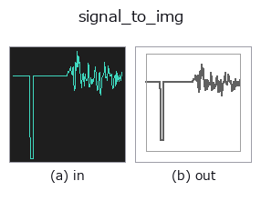

bridge op• Data kinds: signal → image
• Call: fullseye.apply(img, "signal_to_img", a=0.5, b=0.5) (the 2-D model is one image plus two scalar knobs a,b∈[0,1])

*The figure is the actual output on a synthetic 128×128 input. Left: input, right: output. Point clouds are drawn as a top-down scatter (brightness = z), 1-D series as a line plot, volumes as the maximum-intensity projection along z, videos as the middle frame, complex images as magnitude; return values that are not pictures are shown as the values themselves.*
Sweeping knob a (0.1 / 0.5 / 0.9, the other knob at its default):
▸ signal_to_img: knob a sweep (docs site)
Sweeping knob b (0.1 / 0.5 / 0.9, the other knob at its default):
▸ signal_to_img: knob b sweep (docs site)
Stages (the ops that come before → this op, left to right):
▸ signal_to_img: stages (docs site)
On other images (synthetic scene / photo / coins. Top row: inputs, bottom row: their outputs. Knobs at default):
▸ signal_to_img: other inputs (docs site)
> This operator's description has not been translated yet. The original text follows as it is.
1-D の signal を折れ線の図にして画像へ戻す —— 「作った列を見る」入口。
行きの橋(`img_to_signal / img_to_projection_profile`)で画像から列を
作れるようになったが、その列を見る登録 op が無かった。signal を画像に
落とせる op は `spectrogram` の 2 本だけで、どちらも描くのはスペクトル
であって列そのものではない。図の生成器は 1-D を折れ線で描いているが、
それは道具の中の実装で、`fullseye.apply` からも Studio からも呼べない。
この op がその穴を埋める。
• `a → 縦軸の**余白** pad = 0.30 * a * (データの幅)`(a=0 でぴったり、
a=1 で上下に 30 % の余白)。ぴったりだと端の点が枠に重なる。
• `b → 描き方。b < 1/3 で**点**、< 2/3` で折れ線、それ以上で棒。
★並びは「既定のノブ 0.5 がその型に素直な描き方になる」ように決めてある
—— 列は折れ線が素直なので真ん中が折れ線。
• 横軸は添字 `0..N-1`、縦軸はデータの範囲(+ 余白)。軸は閉形式
(`annotate.axes_transform`)なので、値が画素のどこに来るかは計算できる。
• 返り値: `(128, 128)` float64、白地に濃い線([0,1])。★**定数列は潰れた軸を
±0.5 開いて中央に水平線 1 本**を描く(`axes_transform` は幅 0 の軸を
ValueError で拒否するので、ここで開く)。空の列は白紙。
使いどころ: 射影プロファイルの谷を目で確かめる、1-D 関数族
(`tb_smooth_funct_1d_gauss / tb_derivate_funct_1d`)の効果を見る、
図・記事にそのまま貼る。
• gallery2d_bridge family guide
• Sample-data catalog (download URLs / licences) — 2-D uses skimage.data (BSD/public domain) plus synthetic images; 3-D lists download URLs for real data sources (Stanford, PDS, …).
• Operator provenance and references — the sources of the research/methods this op family came from.
• The canonical algorithm (author, year) and its uses are named in the family usage guide above.
The program below has been verified to run (same input as the figure). In Studio's help this block becomes buttons that load and run it on the spot.
img_to_signal 0.50 0.50 signal_to_img 0.50 0.50
▸ Load this pipeline · Load & run
• gallery2d_bridge — py -3.11 examples/gallery2d_bridge.py
image as input)identity · gaussian · mean_box · bilateral · unsharp · median · min_filter · max_filter
bridge)img_to_points · img_to_keypoints · img_to_signal · img_to_projection_profile · img_to_counts · img_to_matrix · img_to_video · img_to_volume
*Provenance: ops.py — 2D operator registry. This per-op note is generated by tools/opdocs.py md (do not hand-edit).*
© 2026 Kazufumi Furuse — Fullseye operator documentation. Licensed under Apache-2.0.
{kind=link}
{kind=link}
{kind=link}
{kind=link}